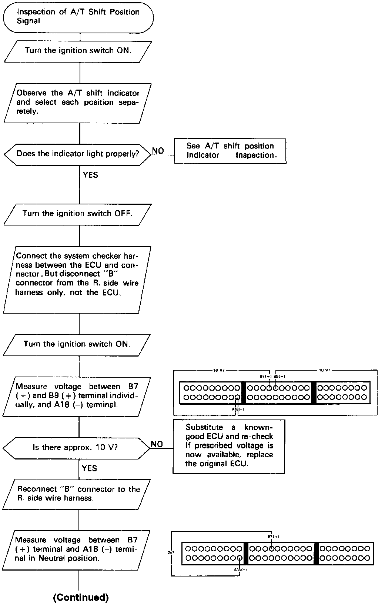
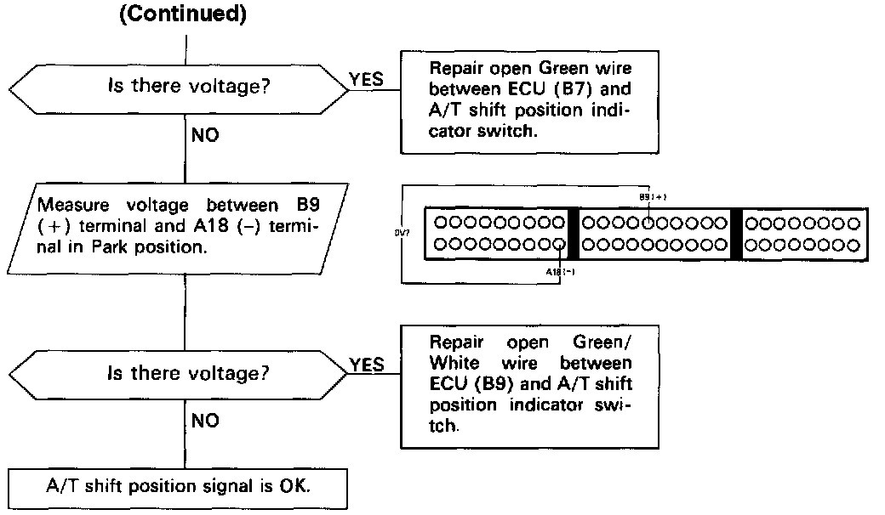

Operation CHARM
: Car repair manuals for everyone.
Home
>>
Acura
>>
1987
>>
Legend Sedan V6-2494cc 2.5L SOHC FI
>>
Repair and Diagnosis
>>
Transmission and Drivetrain
>>
Automatic Transmission/Transaxle
>>
Sensors and Switches - A/T
>>
Transmission Position Sensor/Switch
>>
Testing and Inspection
>>
A/T Shift Position Signal
>>
Sedan
Sedan


This signals the PGM-FI ECU when the transmission is in Neutral or Park.